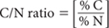

Express TOC as % C, determined by Method 6B1, Method 6B3 or – if elemental C and carbonates are absent or insignificant – Methods 6B2a, 6B2b, or 6B4, and TSN as % N, from an appropriate method (Method 7A1 to 7A6) for the same profile segment, each on an oven-dry basis.

Report C/N ratio on an oven-dry basis noting method codes involved for both % C and % N.